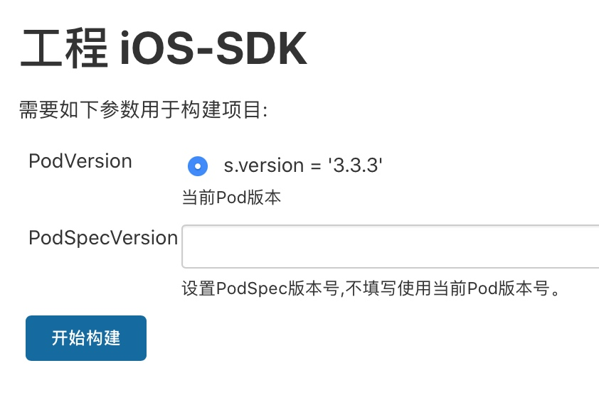
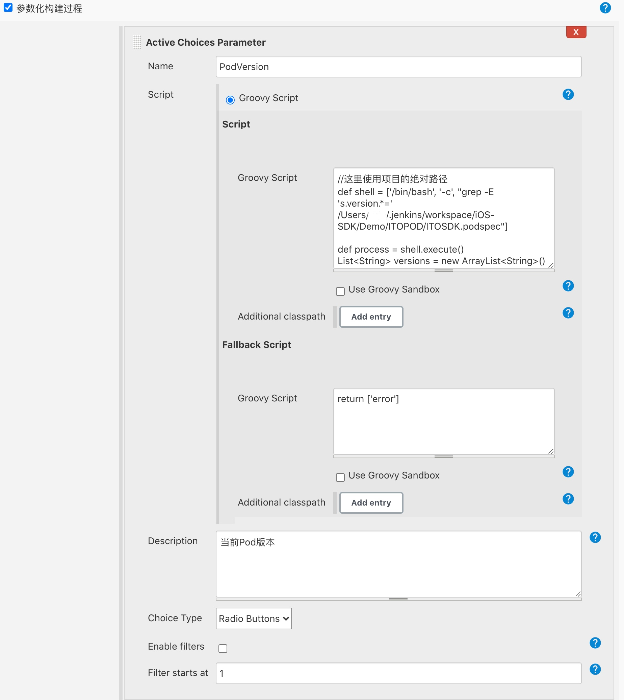
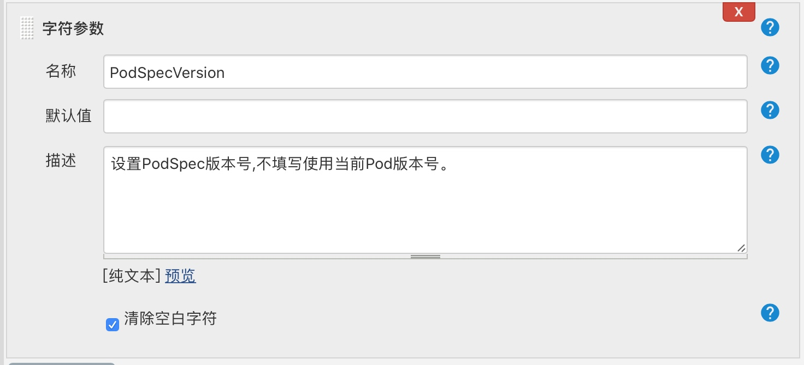

当前环境为Mac OS
在 Build with Parameters 时显示当前的pod版本号，并可以在打包时修改。效果如下：

首先安装 Active Choices Plugins，安装完成后打开项目 -> 配置 -> 勾选参数化构建过程 -> 添加参数 -> Active Choices Parameter, 填写 Name，勾选 Groovy Script, 在Script填写脚本
//这里使用项目的绝对路径(absolute path)
def shell = ['/bin/bash', '-c', "grep -E 's.version.*=' /Users/你的用户名(YourName)/.jenkins/workspace/iOS-SDK/Demo/ITOPOD/ITOSDK.podspec"]
def process = shell.execute()
List<String> versions = new ArrayList<String>()
versions.add(process.text + ':selected')
return versions
在 Fallback Script 填写
return ['error']
Choice Type 选择 Radio Buttons

现在已经完成了显示版本号，接下来比较简单，添加一个字符参数即可。如图：

点击 保存 后就完成了！
构建Shell
这里补充自己写的构建shell脚本，读者可以参考。
export LANG=en_US.UTF-8
#如果填写了PodSpec版本号，修改版本值
if [ $PodSpecVersion ];then
echo "输入版本号:$PodSpecVersion"
sed -i '' -e "s/s.version .*$/s.version = \'${PodSpecVersion}\'/1" Demo/ITOPOD/ITOSDK.podspec
fi
# 获取podspec版本
VersionNumber=`grep -E 's.version.*=' Demo/ITOPOD/ITOSDK.podspec | tr -d "'a-z= " | sed "s/\.//1"`
echo ${VersionNumber}
if [ ! $VersionNumber ];then
echo "获取版本号错误"
exit -1
fi
# === 打包 === #
# 进入目录
cd ITOSDK_Proj
# 安装依赖库
pod install
# 运行单元测试
#xcodebuild test -workspace 'ITOSDK_Proj.xcworkspace' -scheme 'ITOSDK_Proj' -destination 'platform=iOS Simulator,name=iPhone 8' -only-testing:'ITOSDKTests'
# 执行打包脚本
xcodebuild -workspace 'ITOSDK_Proj.xcworkspace' -scheme Pack_Full
# 返回上级目录
cd ..
# 删除并替换文件
rm -rf Demo/ITOPOD/ITOSDK/*
mv -f ITOSDK_Proj/Z_PackedFramework/ITOSDK.framework Demo/ITOPOD/ITOSDK/ITOSDK.framework
# 进入demo项目文件夹
cd Demo/ITOSDKDemo/
# 安装依赖库
pod install
# demo项目build
xcodebuild -workspace 'ITOSDKDemo.xcworkspace' -scheme 'ITOSDKDemo'
# 返回项目目录
cd ../..
# zip压缩包Demo文件夹
ZipName='ITOSDK&DEMO-带双录-V'${VersionNumber}
zip -r -q ${ZipName}.zip Demo
# 移动文件到指定文件目录
rm -rf ~/Desktop/iOSSDK/*
mv ${ZipName}.zip ~/Desktop/iOSSDK/
#列出文件
ls ~/Desktop/iOSSDK
# 上传SVN
#svn update
#svn commit -m “提交sdk和demo压缩包“ ${ZipName}.zip Demo
# 删除本地文件
# 通知相关人员